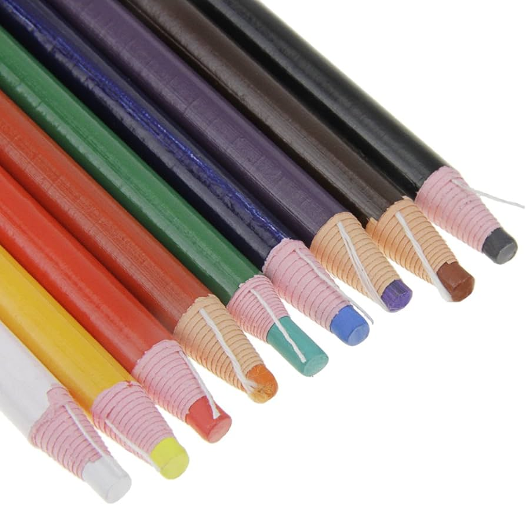
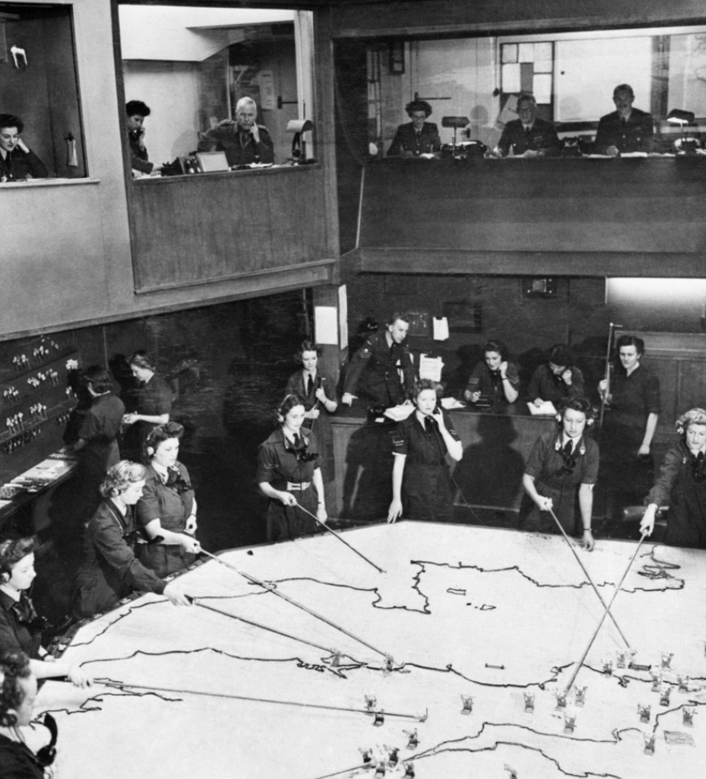
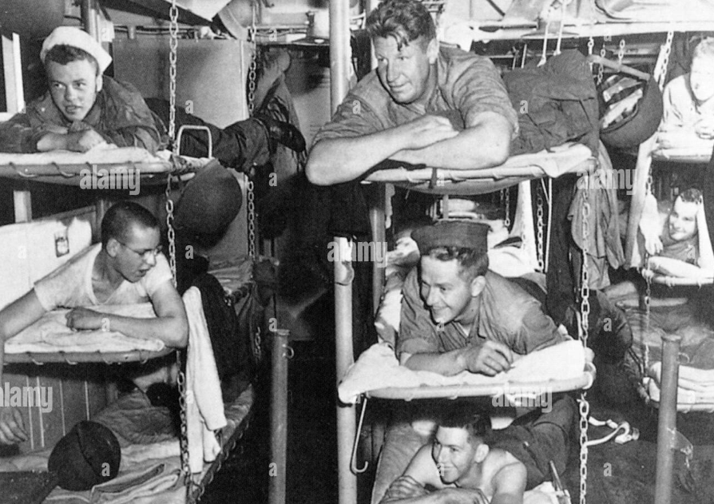
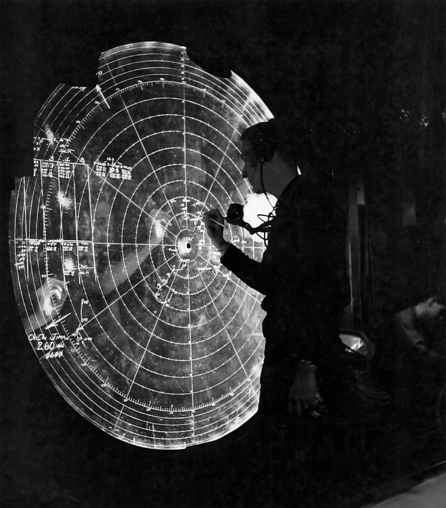
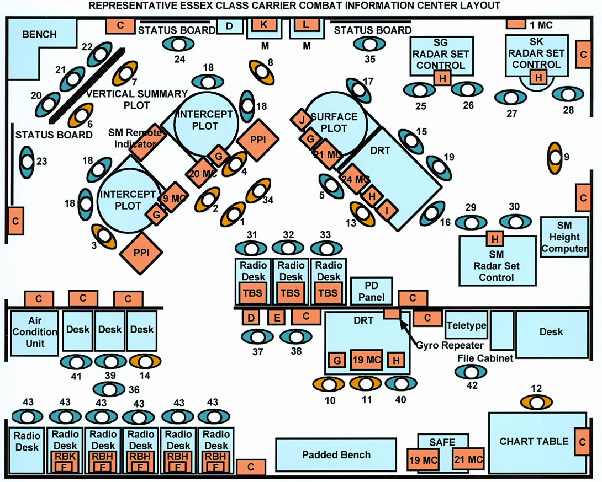
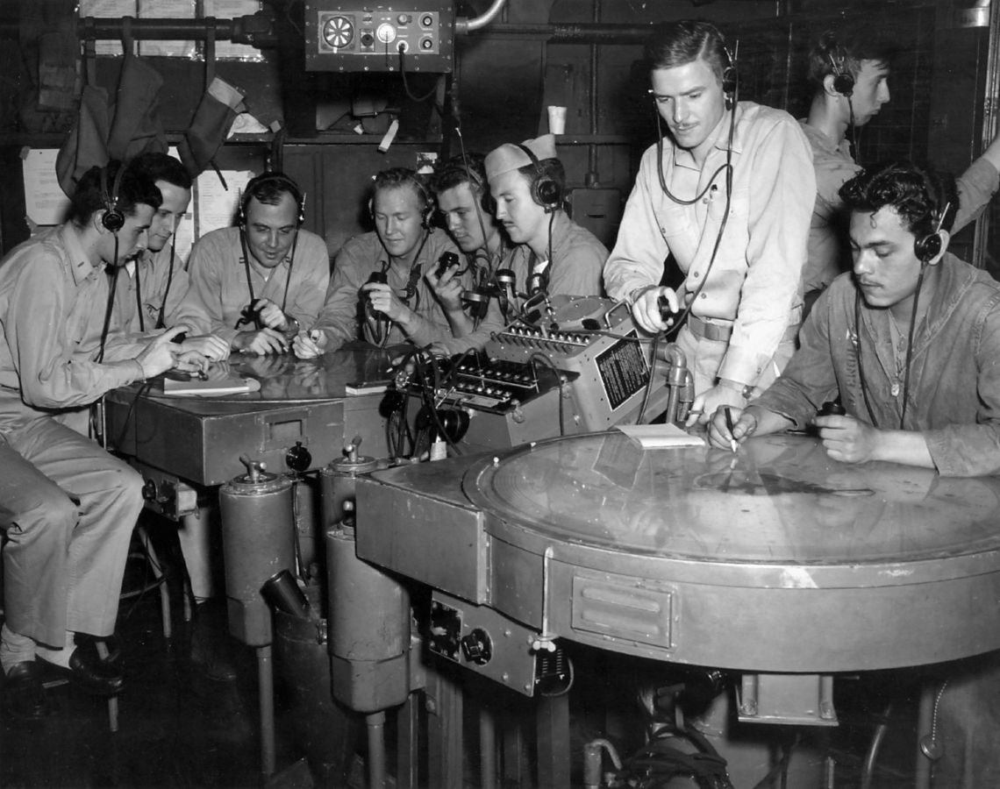
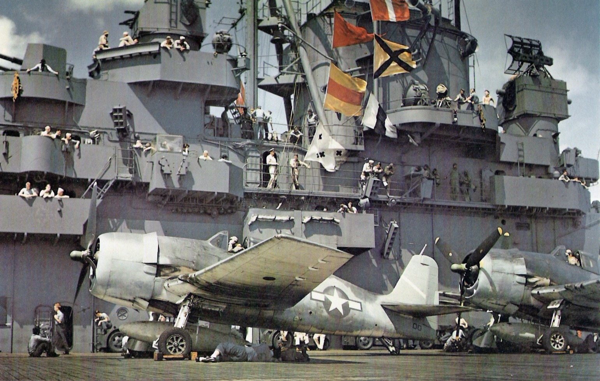
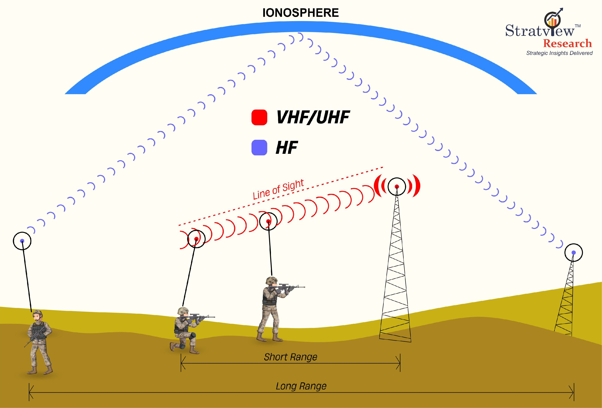

새로운 레이더, 새로운 항모 (2) - 함교냐 CIC냐
게시: 2025-01-30T06:30:49+09:00
<해군이 또 육군 것을 훔치다> 해군은 해군대로, 육군은 육군대로 자기들이 가장 많이 고생한다고 생각하는데 (한편 공군은 지들이 편하게 지낸다는 거 스스로 인지하는 것 같음), 육군의 어려움 중 하나는 최전선에서는 깜깜한 어둠 속에서도 조명을 마음대로 켜지 못한다는 것. 하지만 분명히 장교 및 부사관은 한밤중에라도 상황판에 숫자나 그림을 그려가며 작전 회의를 해야 할 필요가 있음. 그러던 중 영국 육군 누군가가 plexiglass의 가장자리에 자외선을 비추면 그 위에 색연필(grease pencil)로 써놓은 글자가 어둠 속에서 빛난다는 것을 발견.

(색연필을 grease pencil이라고 하는데, 보통 china marker 또는 chinagraph pencil라고도 부름. 이유는 중국에서 발명된 것이기 때문이 아니라 도자기, 즉 china에도 글자를 쓸 수 있는 펜이기 때문.) 그런데 이 발견이 가장 유용하게 쓰인 곳은 해군. 해군은 실내에서 뭐 딱히 등화관제할 필요도 없는데 왜 이게 유용했을까? 기억들 하시겠지만 로열 네이비 항모에 처음 레이더가 설치되었을 때 레이더 관제사들을 가장 괴롭혔던 것은 공간의 부족. 레이더 A-scope에서 읽은 정보를 계산하여 해도에 작도하기도 바빴는데, 군함이라는 것은 항공모함조차도 공간이 너무 부족했기 때문에 큰 책상을 놓을 자리가 없었던 것. 나중에 취역한 항모나 전함 등에서는 좀 더 넓은 상황실을 레이더 관제사들에게 배정하긴 했는데, 그래도 넓직한 공간을 마음대로 사용했던 영국 공군의 레이더 상황실과는 비교가 불가.

(이런 상황실을 항모에서 기대하는 것은 불가능)

(항공모함이라고 하면 엄청 크고 넓어서 승조원들을 위한 영화관 아이스크림 가게 등등이 다 갖춰진 곳을 생각하지만, 그런 개념은 승조원들 자는 곳을 보는 순간 산산조각이 남.) 그런 공간 문제를 해결하기 위해 영국 해군이 내놓은 혁신은 상황판을 탁자에 수평으로 펼쳐놓는 것이 아니라, 수직으로 세워 놓는 것. 그렇게 세워 놓으면 넓은 작도용 탁자도 필요없을 뿐만 아니라, 저쪽에 앉아있는 전투기 관제장교(FDO, Fighter Director Officer)가 멀리서도 적기와 아군 요격기의 위치를 한 눈에 살펴볼 수 있었음. 그런데... 막상 해보니 불편한 점이 있었음. 적기든 아군 요격기든 그 위치가 실시간으로 계속 변했으므로 작도병 2명이 계속 상황판에 달라붙어서 그 위치를 표시해야 했는데, 그러다보니 FDO가 상황판 쪽을 보면 눈에 들어오는 것은 적기나 아군 요격기의 위치가 아니라 언제나 작도병의 등짝 뿐. 그런 상황에서 육군이 발견했다는 플렉시글라스와 색연필, 그리고 자외선 램프의 조합은 그야말로 환상적인 솔루션. 작도병들은 투명한 플렉시글래스의 앞쪽이 아니라 뒤쪽에 서서 항공기 정보를 색연필로 작도하면 되었고, 은은히 빛을 내는 그 글씨는 CIC 중앙에 앉은 FDO가 쉽게 읽을 수 있었음. 딱 하나의 문제점은 작도병들이 글자를 거울에 반사된 모양으로 쓰는 방법에 익숙해져야 했다는 것. 1943년부터 미해군에서 우르르 쏟아져 나오기 시작한 Essex급 정규 항모들에는 모두 이런 형태의 플렉시글라스 상황판을 배치한 CIC를 갖추게 됨.

(에섹스급 항모에 배치된 플렉시글라스 상황판과 거기에 색연필로 정보를 기입하는 작도병)

(그러나 이 수직 상황판이 만능은 아니었음. 그림은 에섹스급 항모의 CIC 배치도. 보시다시피 수평 작도용 탁자도 여전히 존재. 하나는 항공기용, 다른 하나는 수상함정용. 특이한 것은 저 배치도 맨 아래에 보이는 'padded bench'. 즉 푹신한 벤치가 있는데 아마 지친 장교들이 간이 침대로 쓰거나 CIC를 뻔질나게 드나들던 함장이 앉을 곳이었던 듯.)

(수평 작도용 탁자. 보기엔 평범해 보이지만 경험이 많은 관제장교와 작도병들의 의견을 받아 설계된 것으로서, 각종 통신 단말기와 서랍, 접이식 의자 등이 통합되어 있음.) <왜 자꾸 내려와요?> 원래 CIC는 Combat Operations Center, 즉 COC로 불렸음. 이렇게 이름을 붙인 것은 바로 니미츠 제독. 그러나 니미츠 제독보다 더 선임인 제독들이 그 명칭에 강한 반감을 가짐. "해군이면 당연히 함장이 지휘하는 함교가 Operation Center이지 무슨 이상한 브라운관과 지도 같은 것만 들여다보는 괴짜들이 앉아있는 컴컴한 방이 작전 센터냐?"라는 것. 사소한 이름 가지고 선배들과 싸우고 싶지 않았던 니미츠 제독이 그냥 Operation (작전) 대신 Information (정보)로 이름을 바꿈. 그런데 그냥 항해하는 상황이라면 실제 창문이 있고 조타륜이 있는 함교가 더 중요하겠지만, 전투 상황이라면 함교보다는 CIC가 훨씬 더 중요. 당장 전투가 벌어진 상황이 아니라고 하더라도, 언제 수평선 너머 저 멀리에 일본해군 폭격기들이 나타날지 모르는 일이므로 CIC는 매우 중요. 그러니, 함장이 있어야 할 곳은 함교일까 CIC일까? 새롭게 취역한 USS Yorktown (CV-10)의 함장은 Raymond R. Waller 대령이었는데, 이 양반은 CIC가 훨씬 더 중요하다고 생각하여 문지방이 닳을 정도로 CIC에 뻔질나게 드나들었음. 원래 CIC에는 CIC officer가 따로 있는데, 요크타운의 CIC officer는 Cooper B. Bright 중령. 당연히 함장이 뻔질나게 드나들며 참견질하고 감시질하는 것이 싫었던 브라이트 중령은 월러 함장이 나타나면 괜히 인터폰 수화기를 집어들고 누군가와 통화하는 척을 자주 했다고. 실제로 현대 미해군에서도 구축함이든 항공모함이든 함장은 함교와 CIC를 번갈아가며 왔다갔다 하며, 특히 전투에 돌입한 상황에서는 함장은 대개 CIC에 죽치고 앉아 있게 되는 것이 보통.

(USS Yorktown에서 이함 준비를 하는 F6F Hellcat 전투기) <기술을 따라가지 못하는 관습> 1943년 여름부터는 미해군이 오랫동안 기다려 왔던 새로운 장비가 본격적으로 도입되기 시작. 바로 수정 공진기를 이용한 '수퍼 주파수' VHF (Very Hight Frequency, 30 ~ 300 MHz) 무전기. 기존에 쓰던 HF 대역의 전파가 해수면을 따라 휘기도 하고 또 상공의 전리층에 반사되어 수평선 너머까지 멀리 날아가는 것에 비해, VHF는 직진성이 강하기 때문에 수평선 너머의 지상이나 해상으로는 전달되지 않았음. 즉, 저 멀리 위치한 적 지상 기지나 군함에게는 아군의 VHF 무전이 들리지 않는다는 이야기. ( https://nasica1.tistory.com/818 참조)

따라서 전에 언급한 1943년 1월, 렌도바 해전에서 순양함 USS Chicago (CA-29)가 무선침묵 깨는 것을 두려워한 나머지 항공 엄호 없이 일본해군 뇌격기들과 싸우다 격침된 사건은 이제 VHF 무전기가 생겼으니 반복될 필요가 없었음. 그런데도 한동안은 반복되었음. 이유는 무지한 함장들 때문. 구축함 등에도 이제 VHF 무전기가 보급되었으나, 전자기파에 대한 이해가 부족했던 전통파 해군 함장들은 불필요해진 무선 침묵을 여전히 고수하는 경향을 보였음. 그래서 구축함과 순양함 등 일부 함정에 탑승한 FDO들이 VHF 무전기로 저 먼 상공의 아군기와 교신하여 정보를 교환하려 해도, 함장이 무선 침묵 깨는 것을 거부하는 경우가 종종 발생. 그래서 장교들에게는 수학과 물리학, 화학 등 이과 과목 교육이 매우 중요한 것.